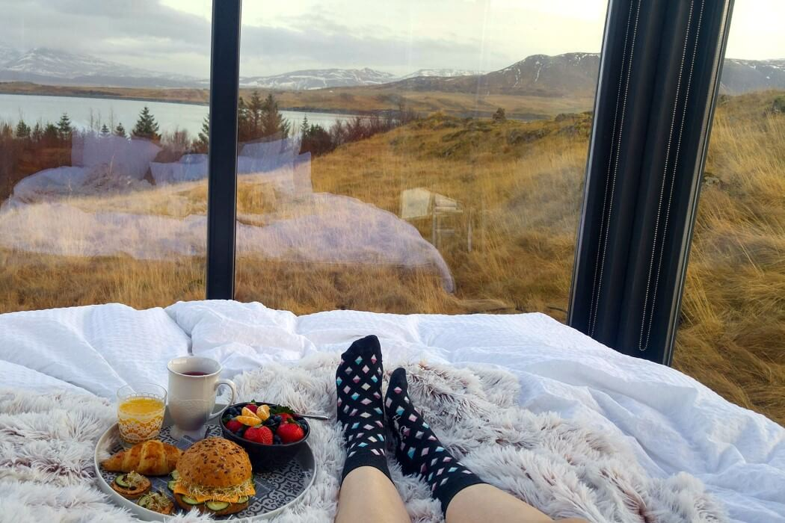
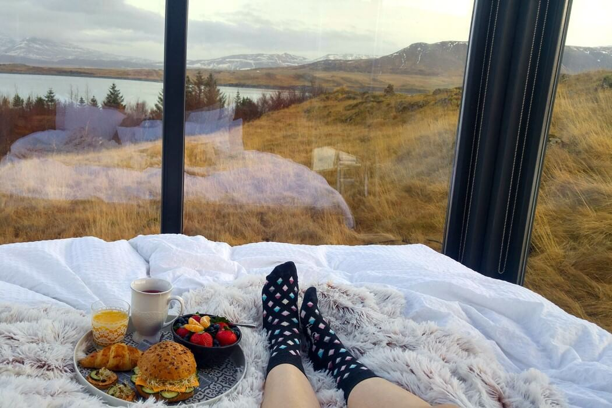

To be honest, with the amount of natural beauty Iceland has to offer, and with its 300K population (that’s the entire country), ceilings and walls are A. a hindrance, since they block out the natural beauty of the land, and B. unnecessary, because with its incredibly low population density, you really don’t need the privacy in the countryside.
That’s why the Panorama Glass Lounge is all glass. Instead of beautifying its interiors with trinkets and furniture, it uses the outside’s natural beauty to make the interiors feel complete. The bedroom features all-glass walls, offering a clear panorama of the surrounding beauty as well as perfect views of the night’s sky that lights up with the Aurora Borealis, creating the most beautiful wallpaper you could ever ask for!
Designer: Panorama Glass Lodge

 
